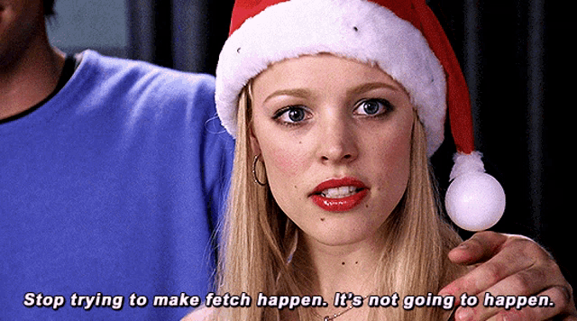
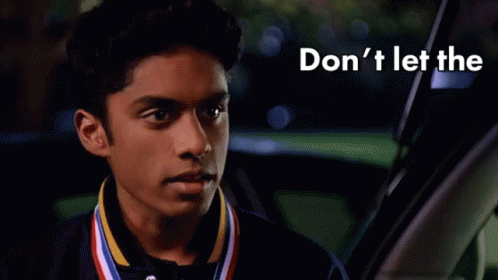

Mean Girls
Mean Girls is a 2004 American teen comedy movie starring Lindsay Lohan, Rachel McAdams, Tim Meadows, Ana Gasteyer, Amy Poehler, and Tina Fey. It was written by Fey and directed by Mark Waters. Mean Girls is about a teenage girl, Cady Heron, who used to be home schooled in Africa but moves to the United States and has to go to a normal high school in Evanston, Illinois. On her first day at school, she hates it. She thinks it is a bit weird because she cannot go to the toilet when she wants, cannot write in green ink and has to stay in the same seat every time she goes into a lesson (Source: Wikidepia)
Overall plot
About the Plastics: The Plastics is a popular Northshore high girl group, originally consist of Regina George, Karen Smith, Gretchen Wieners. Soon after when the main character Cady Heron arrived, things started to get interesting. By interesting, it means that the Burn Book[1] messed up the whole school and turn Cady's fantasy sequence of the school into a zoo. I won't tell the rest of the movie, it is for you to watch if you are interested like me too
About the characters
Cady Heron: Cady is rather naive, she might have no clue what is going on and just randomly say what she thinks is cool. Her main motive throughout the whole movie is to get Aaron to date her. It is shown in the Walmart black friday ads[2] that Cady is later to be the principal of the Northshore high
Regina George: The typical mean girl stereotype, known for her popularity. I have nothing much to say about Regina except I admire her dare-to-challenge anything that gets over her in the school’s food chain

Gretchen Wieners: Gretchen is a rich girl, a follower, and dedicated type of mean girl. Like Karen, I don’t think she is that mean… Of course she said a few rash things, but they are rather more blunt than mean. Like when the group finished the “Jingle Bell Rock” dance, she had a few comments on Cady that Cady is blushing and all. That conversation stopped with Regina saying “Gretchen, stop trying to make fetch happen. It’s not going to happen” after Gretchen said “That’s so fetch[3]”
Karen Smith: I love Karen, she is the dumb blonde stereotype[4]. Well, she doesn’t have many scenes but I can see that she is really nice. Being in the wrong group – the Plastics – makes her reputation worse in the first place and I think she is really pretty :sob:
Kevin Gnapoor: I always think Kevin is definitely a friendly person towards everyone, a great mathlete and a badass M.C. He makes fun jokes, lightens up the mood and is generally nice and calm. For me he is the best character of the whole show, much love. It is actually revealed that Kevin's actor (Rajiv Surendra) and Aaron's actor theorized that their characters might be gay for each other[5]. This said out as a joke later on in the interview
